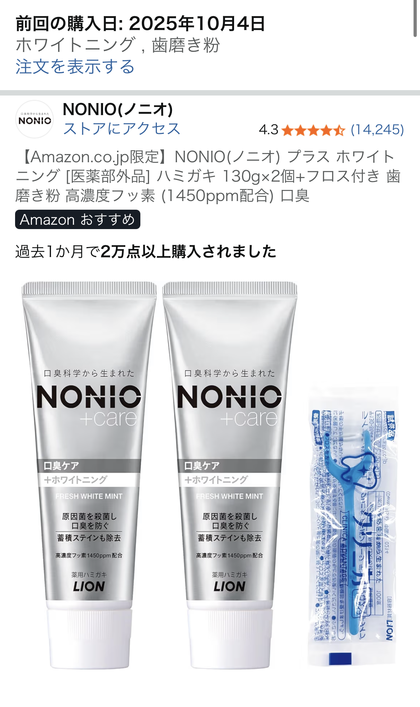

NONIOホワイトニング歯磨き粉を実際に使って分かった口臭予防・白さ・コスパ【奥さんイチオシで我が家はこれ一択】

「奥さんイチオシなので我が家はこれ一択です。口臭予防に加えてホワイトニングも期待でき、安価なので助かります。」 ーーそんな★5レビューが付いていたのが、今回紹介する NONIOホワイトニング歯磨き粉です。
日用品の中でも歯磨き粉は毎日必ず使うアイテムだからこそ、口臭ケア・白さ・価格のバランスは妥協したくないところ。 本記事では、この実際の口コミ内容をベースにしつつ、一般的なホワイトニング歯磨き粉の特徴も踏まえて、 「本当にこれ一本で日常の口臭ケアとホワイトニングを任せられるのか？」という視点で詳しくレビューしていきます。
この記事で分かること
- NONIOホワイトニング歯磨き粉の口臭予防の実力
- 毎日使って感じるホワイトニング効果のリアル
- ドラッグストア価格帯としてのコスパ評価
- どんな人に向いていて、どんな人には合わないか
奥さんイチオシで「我が家はこれ一択」になった理由
レビュー主さんの家では、奥さんがNONIOホワイトニングを強く推していて、 「歯磨き粉はこれ以外買わない」レベルの指名買いになっているのが印象的です。 毎日使うものがここまで固定化されるのは、使い心地と効果の両方に納得感がある証拠と言えます。
特に日常生活で気になるのが、マスク越しの自分の口臭や、会話時のエチケット。 NONIOシリーズはもともと口臭ケアに強いイメージがありますが、ホワイトニングタイプは 「口臭ケア＋歯の白さケア」を同時に狙えるのがポイントです。
さらに、レビューでは「安価なので助かります」と書かれている通り、 ドラッグストアやAmazonでも手に取りやすい価格帯。 家族全員で毎日使うことを考えると、続けやすい価格かどうかは非常に重要です。
口臭予防の実力：朝のスッキリ感が続きやすい
口臭予防に関しては、NONIOシリーズらしく「口の中のニオイの元にアプローチする処方」が特徴です。 一般的に、口臭の多くは舌や歯周ポケットにたまった汚れ・細菌が原因と言われています。 こうしたニオイの元を洗い流し、殺菌成分で増殖を抑えることで、朝のイヤな口臭を抑えやすくなるのがポイントです。
実際の口コミでも、「口臭予防に加えてホワイトニングも期待できる」と書かれているように、 まずは口臭ケアのベースがしっかりしているからこそ、家族からの支持を得ている印象があります。 毎朝・毎晩のルーティンに組み込むことで、人と話すときの不安が減るのは大きなメリットです。
ホワイトニング効果：毎日の「ちょい足しケア」として優秀
ホワイトニング歯磨き粉は、いわゆる歯科医院のホワイトニングのように 劇的に真っ白になるタイプではなく、「着色汚れを落としやすくする日常ケア」という位置づけです。 NONIOホワイトニングも同様で、コーヒー・紅茶・ワインなどによるステインを、 毎日のブラッシングで少しずつ落としていくイメージに近いです。
そのため、1〜2回使っただけで真っ白になることを期待すると「思ったほどではない」と感じる可能性があります。 逆に、レビュー主さんのように「口臭予防がメインで、プラスアルファで白さもキープできたらうれしい」 というスタンスで使うと、満足度はかなり高くなります。
特に、「歯の黄ばみが気になり始めたけれど、いきなり歯医者のホワイトニングはハードルが高い」 という人にとっては、最初の一歩としてちょうどいいホワイトニングケアと言えるでしょう。
ドラッグストア価格帯としてのコスパ：家族で使っても続けやすい
レビューで強調されていたのが、「安価なので助かります」という一言。 ホワイトニングをうたう歯磨き粉の中には、通常の歯磨き粉よりも高めの価格設定になっているものも多いですが、 NONIOホワイトニングはドラッグストアでも手に取りやすい価格帯に収まっています。
さらに、家族全員で同じ歯磨き粉を共有できるのもコスパ面で大きなメリットです。 「口臭ケアもしたい」「白さもキープしたい」「でもコストは抑えたい」という条件を同時に満たせるので、 レビュー主さんの家庭のように「これ一択」になりやすいバランスだと感じます。
NONIOホワイトニング歯磨き粉が向いている人・向かない人
向いている人
- マスク越しの自分の口臭が気になる人
- コーヒー・紅茶をよく飲み、着色汚れを日常的にケアしたい人
- 家族で同じ歯磨き粉を共有したい人
- ドラッグストア価格帯で口臭ケア＋ホワイトニングを両立したい人
向かないかもしれない人
- 短期間で劇的なホワイトニング効果を求めている人
- ミント感が強い歯磨き粉が苦手な人（※フレーバーの好みは個人差があります）
- 歯科医院レベルのホワイトニングを期待している人
あくまで「毎日の口臭ケアと、着色汚れの蓄積を抑えるためのホワイトニング」という位置づけで考えると、 コスパ・使い勝手・家族での使いやすさのバランスが非常に良い一本です。
まとめ：日常の口臭ケアと白さキープを、1本で手軽に続けたい人におすすめ
改めて、今回の★5レビューを振り返ると、 「奥さんイチオシなので我が家はこれ一択」「口臭予防に加えてホワイトニングも期待でき、安価なので助かります」 という言葉に、この歯磨き粉の本質がよく表れています。
劇的な変化を約束するタイプではないものの、毎日の積み重ねで口臭ケアと白さケアを両立できる一本として、 日用品の中でもかなり「買って損しにくい」アイテムだと感じました。
「とりあえず、家族で使える口臭ケア＋ホワイトニング歯磨き粉を1本決めたい」という人には、 NONIOホワイトニング歯磨き粉はかなり有力な候補になるはずです。
実際の価格や在庫状況、他の口コミもあわせてチェックしたい方は、以下のリンクからAmazonの商品ページを確認してみてください。
NONIOホワイトニング歯磨き粉をAmazonでチェックする